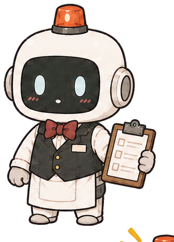

하찮은 업적청 공식 인증
대 업 인 증 서
문서번호 대업-2026-000001인류사적 대업
침대에서 일어남
― 중력을 이겨낸 자 ―
- 공식 난이도
- ★★★★★
- 인류 기여도
- 98점
“긴급 알림: 주인님께서 침대에서 일어남에 성공했습니다.”
담당 집사: 오류봇
공식
대업
인증
대업
인증
과잉집사 중앙인사국
주인님의 사소한 행동을 역사적 대업으로 부풀릴 전담 직원입니다.

담당 집사감정이 없어야 하는데 주인님 일에는 자꾸 과열됨
RECEPTION DESK · FORM 01
접수된 행동은 담당 집사가 즉시 대업으로 재분류합니다.
첫 공식 인증은 유효 대업 5개 이후 발급됩니다.
비슷한 행동은 하루 한 번만 도장에 반영됩니다. 칭찬은 매번 정상 지급됩니다.
CENTRAL ARCHIVE · CABINET A-01
기록을 쌓아 공식 인증서를 발급하고, 언제든 다시 열람할 수 있습니다.
PERSONNEL BUREAU · ACTIVE DUTY
현 담당의 기록을 먼저 보여주고, 채용 정보는 필요한 만큼만 정리합니다.
감정이 없어야 하는데 주인님 일에는 자꾸 과열됨
과몰입 수치가 쌓일수록 담당 집사 시스템이 한 단계씩 망가집니다.
주인님의 명성이 업계에 퍼지고 있습니다.